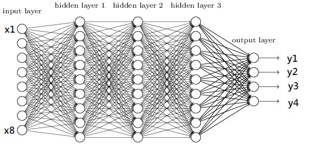
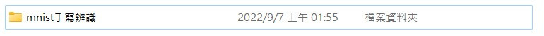
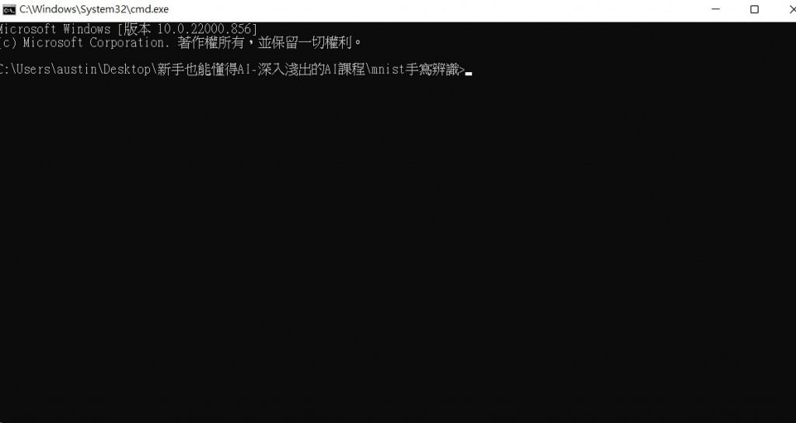
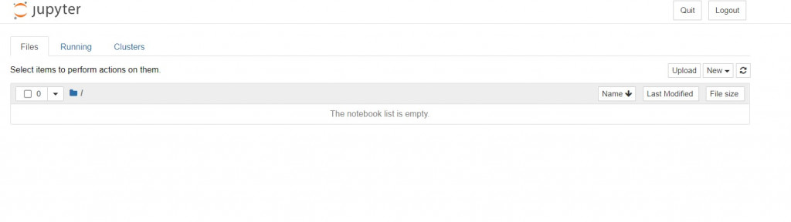
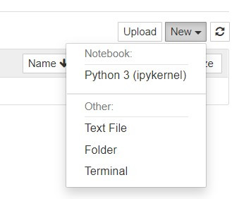
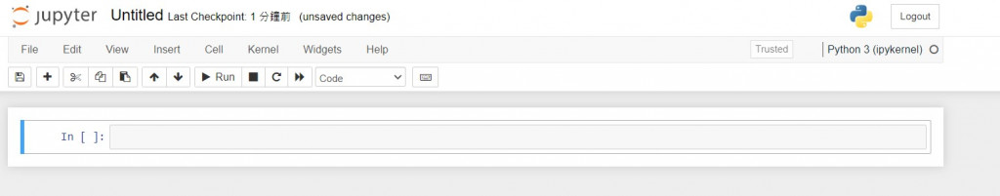

【day3】來辨識圖像-深度神經網路(Deep Neural Network)
發布日期: 2022-09-07 05:37:00
原文連結: https://ithelp.ithome.com.tw/articles/10288343
深度神經網路(Deep Neural Network)
在開始寫程式前，先來看一下最基礎的神經網路DNN的架構圖

圖片來源:https://www.researchgate.net/figure/Deep-Neural-Network-DNN-example_fig2_341037496
圖片是不是看起來有點複雜，其實概念很的簡單，假設我們有個資料集要辨識4種類型得圖片y1~y4，每張圖片有8個特徵(Feature)x1~x8，那神經網路所扮演的角色就是訓練權重(weight)w1~w8，我們可以把權重當作是每一個特徵的分數，分數越高的結果，代表可能性越大，像是在架構圖中的圖片中我們可以用公式能表達為y = x1w1+x2w2+x3w3+x4w4+x5w5+x6w6+x7w7+x8w8，找到最高分數的y就是可能性最高的結果。
這樣是不是有一些概念了，接下來開始講解輸入層(input layer)、隱藏層(hidden layer)、輸出層(output layer)的概念。
輸入層(input layer)
神經網路的第一層被稱作輸入層，這層取得在外部的資源，像是圖片、文字、音訊、能被接受到的訊息，在這層中不會有任何的公式運算，只是傳送資料至下一層。
隱藏層(hidden layer)
隱藏層是在訓練中最重要的一個環節，神經網路就是在這層中學習特徵並產生權重的，一個神經網路至少要有一層隱藏層。
輸出層(output layer)
隱藏層會將資料丟給輸出層，這層的輸出大小會根據你所想要的任務而不同，像是辨識貓與狗的圖片(分類任務)輸出層就會是2(只有貓跟狗)，若像是股票預測(回歸)輸出則為1。
看完以上的敘述後，有沒有發現一個問題，輸出是x1w1+...x8w8那不就會是線性了嗎?為了解決這個問題於是有了激勵函數(activation function)，它能夠使神經網路變成非線性，比較常見的激勵函數有:relu、tanh、softmax、sigmoid等激勵函數，這些函數選用與解說我會在後續的實作課程中講解，這邊先有個概念就好。
建立環境
還記得第一天教的如何安裝函式庫嗎?
今天會用到的函式庫如下:
numpy:支援高階大量的維度陣列與矩陣運算，也針對陣列運算提供大量的數學函數函式庫
tensorflow:深度學習函式庫，在今天只會做為keras的後端並不會實際用到
keras:能夠串接tensorflow，使其能夠簡易的建立神經網路
jupyter:Web的互動式計算環境
那麼我們就開始使用pip安裝這些函式庫吧!!
pip install tensorflow==2.3.0
pip install keras==2.3.1
pip install jupyter
開啟jupyter notebook
安裝函式庫後，該怎麼開始深度學習的第一支程式呢?
在這邊我會建議先創立一個資料夾，避免資料會混亂，我們先將資料夾命名為"mnist手寫辨識"。

點進去資料夾裡面後按下ALT+D就會就會自動跳到網址列，我們只需要在網址列中輸入cmd。

接下來我們在cmd當中輸入jupyter notebook(注意開啟後cmd不能關掉)。

開啟jupyter後點擊右上角的new選擇python3創立檔案。

看到這個頁面就代表可以開始寫程式啦~

呼叫函式庫
首先我們要來學習如何呼叫函式庫
當我們想使用一個函式庫時只需用
import XXX(函示庫名稱)
像是要使用numpy，就能寫成
import numpy
之後就能使用功能了，例如將list轉換成array只需要在函式庫的名稱後面加入.就能使用function
list = [1,2,3]
list = numpy.array(list)
但如果今天覺得numpy這個名字太長了就能用以下的寫法
#import 函示庫 as 簡化的名稱
import numpy as np
list = [1,2,3]
list = np.array(list)
但這樣子import會把函式庫裡面的function通通放到程式裡出來，所以為了節省空間會將一些較常使用的function單獨呼叫
#from 函示庫 import 功能 as 簡化名稱
from numpy import array as ar
list = [1,2,3]
list = ar(list)
這就是在python呼叫函式庫的辦法，了解之後就開始進入今天的正題的MNIST手寫辨識吧!!
MNIST手寫辨識實作
在這邊我們先將程式分為幾個部分:
1.導入函式庫
2.資料前處理
3.模型的建構
4.模型的訓練
1.導入函式庫
import numpy as np
import tensorflow.keras
from tensorflow.keras.datasets import mnist
from tensorflow.keras.models import Sequential
from tensorflow.keras.layers import Dense, Activation
from tensorflow.keras.utils import to_categorical
函式庫說明:
1.keras.datasets:包含著一些著名的資料集例如:nmist、IMDB影評
2.keras.models:架構神經網路
3.keras.layers:創建神經網路Dense(DNN)、conv2d(CNN)
4.keras.utils:資料正規化
2.資料前處理(Data Preprocessing)
在資料前處理之前我們先讀取mnist的資料。
(x_train, y_train), (x_test, y_test) = mnist.load_data()
x_train, x_test : uint8 數組表示的灰度圖像，尺寸為(num_samples, 28, 28)。
y_train, y_test : uint8 數組表示的數字標籤（範圍在0-9 之間的整數），尺寸為(num_samples,)。
拿到資料後先來看一下資料的shape
print(x_train.shape)
------顯示------
(60000, 28, 28)
第一碼60000代表的是資料大小，總共有60000張圖片
第二碼則是長有28個pixel
第三碼則是寬有28個pixel
我們先回到一開始的架構圖，有沒有發現他的輸入是一整排的(一維)，而我們的資料卻是二維，所以要將28x28(2維)的資料變成784(1維)的資料，在這裡我們是用reshape這個function重新list的大小。
x_train = x_train.reshape(60000, 784)
x_test = x_test.reshape(10000, 784)
------顯示------
(60000, 784)
現在來觀看一下第一筆訓練資料的內容
print(x_train[0])
------顯示------
[.... 18 18 18 126 136 175 26 166 255 ...0 0 0 0 0 0 0 0 0]
可以看到裡面有許多數值，這數值代表的是顏色越靠近0的是白色，越靠近255則是黑色，這也就是我們圖片的特徵值。
但是在神經網路中數值越大收斂越慢，且會受到極端值的影響，使訓練效果不佳，所以在這邊將數值除255讓數值能夠壓縮在0~1之間
x_train = x_train/255
x_test = x_test/255
這樣就處理完放入model的圖片資料了。
為了知道神經網路的準確率，我們需要給圖片一個標籤(Label)，但是機器只會看懂0跟1，所以我們需要把數字正規化，在這邊使用one-hot-encoding作為正規化的方式。
y_train = to_categorical(y_train)
y_test = to_categorical(y_test)
假設的label裡面有1與2，那one-hot-encoding就會以位置表達數字的涵義
例如:label = [1,2] 那1就會被編譯成[1,0]、2就會被編譯成[0,1]
到這邊我們就完成圖片與標籤的資料前處理了
3.模型的建構
首先說明一下在本次訓練內用到的激勵函數relu與softmax。
relu:會將0以下的數值通通當作是0，這能夠加強資料的特徵，同時還能加速程式收斂的速度，通常會用於CNN、DNN等架構上。
softmax:會將數值歸一化，且輸出向量中擁有最大權重的項對應著輸入向量中的最大值，通常會定義在分類任務的輸出層。
# 建立模型
model = Sequential()
# 輸入層與隱藏層
model.add(Dense(units=256,input_dim=784, activation='relu'))
# 隱藏層
model.add(Dense(units=128, activation='relu'))
# 輸出層
model.add(Dense(units=10,activation='softmax'))
用keras建立模型相當的簡單，只需要將Sequential()宣告給一個變數後就能使用add就能加入層數，程式碼的範例是一個784大小的輸入層，並且有兩層隱藏層大小分別維256與128，最後輸出10個結果(辨識0~9)。
4.模型的訓練
建立模型之後當然是訓練它了，在訓練之前我們要先了解損失函數(Loss Function)與優化器(Optimizer)。
優化器(Optimizer):我們在國中應該都學過就是微積分找極值，而在深度學習中就是改良找極值的方式去做到最佳化的，我們叫這種方式為梯度下降(Gradient Descent)而這概念則與滑板場相同。想像今天有一個U型滑板場，只要沒有加速最終就會停留在U型的最底部，但若是W型的滑板場就不一定會找到低點了，我們可以想最深的坑會有最陡的坡，所以我們只要給予滑板一定的動力就能一路滑到最深的坑裡爬不出來，而這個名詞就叫做學習率(Learn Rate)，若學習率太高(動力太大)就會找不到最低點，若是動力太小找到最低點則會非常的緩慢，所以就會使用一些偷吃步找到最低點，在深度學習中的偷吃步就是optimizer，可以利用不同optimizer來找的最合適的梯度下降法。
損失函數(Loss Function):一個模型學到特徵的好壞，最關鍵的點就是損失函數的設計，在keras中基本上只會使用到兩個:分類任務常用的categorical_crossentropy，以及回歸任務常用的MSE，當然這些都會是一定的，現階段只會會用就可以了。
# 宣告loss finction與optimizer
model.compile(loss='categorical_crossentropy',optimizer='adam',metrics=['accuracy'])
# 開始訓練model batch_size一次丟多少資料進去訓練 epochs總共要訓練幾次
history = model.fit(x_train, y_train,
batch_size=128,
epochs=10,
verbose=1,
validation_data=(x_test, y_test))
#結果
Epoch 1/10
469/469 [==============================] - 1s 2ms/step - loss: 0.2677 - accuracy: 0.9238 - val_loss: 0.1259 - val_accuracy: 0.9622
Epoch 2/10
469/469 [==============================] - 1s 2ms/step - loss: 0.1011 - accuracy: 0.9696 - val_loss: 0.0968 - val_accuracy: 0.9697
Epoch 3/10
469/469 [==============================] - 1s 2ms/step - loss: 0.0662 - accuracy: 0.9804 - val_loss: 0.0781 - val_accuracy: 0.9758
Epoch 4/10
469/469 [==============================] - 1s 2ms/step - loss: 0.0457 - accuracy: 0.9858 - val_loss: 0.0725 - val_accuracy: 0.9762
Epoch 5/10
469/469 [==============================] - 1s 2ms/step - loss: 0.0362 - accuracy: 0.9888 - val_loss: 0.0755 - val_accuracy: 0.9775
Epoch 6/10
469/469 [==============================] - 1s 2ms/step - loss: 0.0266 - accuracy: 0.9913 - val_loss: 0.0672 - val_accuracy: 0.9784
Epoch 7/10
469/469 [==============================] - 1s 2ms/step - loss: 0.0204 - accuracy: 0.9938 - val_loss: 0.0722 - val_accuracy: 0.9793
Epoch 8/10
469/469 [==============================] - 1s 2ms/step - loss: 0.0167 - accuracy: 0.9946 - val_loss: 0.0744 - val_accuracy: 0.9796
Epoch 9/10
469/469 [==============================] - 1s 2ms/step - loss: 0.0158 - accuracy: 0.9950 - val_loss: 0.0826 - val_accuracy: 0.9778
Epoch 10/10
469/469 [==============================] - 1s 2ms/step - loss: 0.0130 - accuracy: 0.9955 - val_loss: 0.0845 - val_accuracy: 0.9784
我們可以看到用DNN訓練手寫辨識已經97.84%的辨識率了，是不是很簡單呢?
明天就來教一下CNN的架構與程式，那我們明天再見!
完整程式碼
import tensorflow.keras
import numpy as np
from tensorflow.keras.datasets import mnist
from tensorflow.keras.models import Sequential
from tensorflow.keras.layers import Dense, Activation
from tensorflow.keras.utils import to_categorical
(x_train, y_train), (x_test, y_test) = mnist.load_data()
x_train = x_train.reshape(60000, 784)
x_test = x_test.reshape(10000, 784)
x_train = x_train/255
x_test = x_test/255
y_train = to_categorical(y_train)
y_test = to_categorical(y_test)
# 建立模型
model = Sequential()
# 輸入層與隱藏層
model.add(Dense(units=256,input_dim=784, activation='relu'))
# 隱藏層
model.add(Dense(units=128, activation='relu'))
# 輸出層
model.add(Dense(units=10,activation='softmax'))
model.compile(loss='categorical_crossentropy',optimizer='adam',metrics=['accuracy'])
history = model.fit(x_train, y_train,
batch_size=128,
epochs=10,
verbose=1,
validation_data=(x_test, y_test))
課程中的程式碼都能從我的github專案中看到
https://github.com/AUSTIN2526/learn-AI-in-30-days